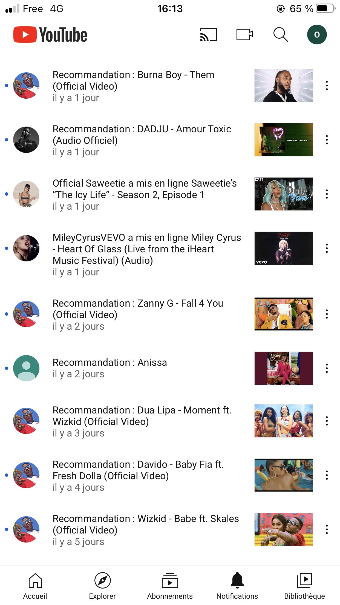
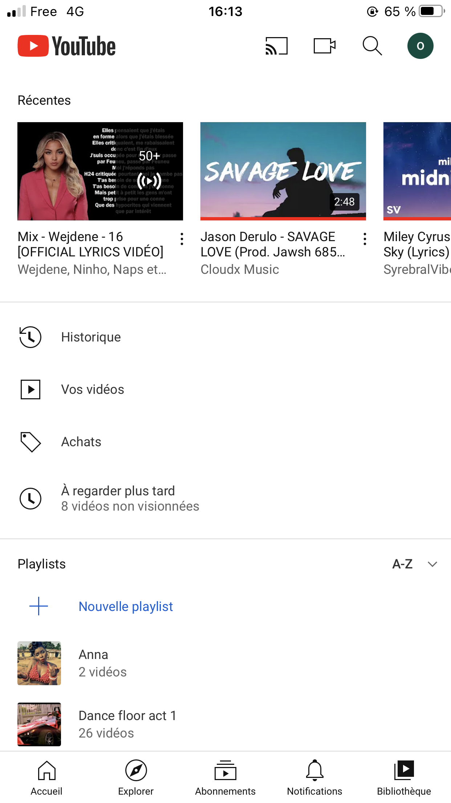
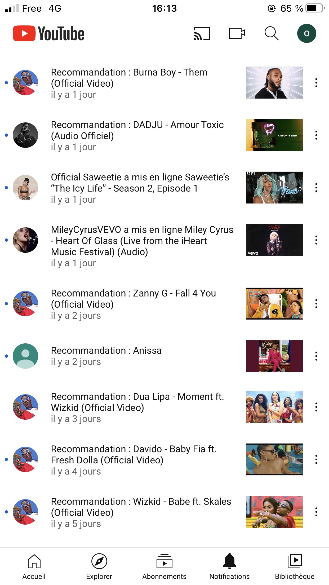
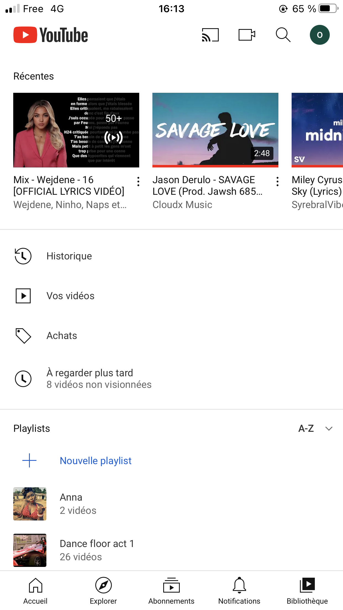

ON S'AMBIANCE
plus ?
YouTube (en français : [ jutyb] ou [ jutjub]a, en anglais : [ˈjutub]b) est un site web d’hébergement
de
vidéos et un média social sur lequel les utilisateurs peuvent envoyer, regarder, commenter,
évaluer et partager des vidéos en streaming. Il a été créé en février 2005 par Steve Chen, Chad
Hurley et Jawed
Karim, trois anciens employés de PayPal, et racheté par Google en octobre 2006 pour 1,65 milliard de
dollars. Le
service est situé à San Bruno, en Californie. En 2009, environ 350 millions de personnes visitent
chaque mois ce site9.
Le 28 octobre 2010, l'ensemble des chaînes de YouTube atteint le milliard d'abonnés10. En 2020,
chaque mois, YouTube compte
plus de 2 milliards d'utilisateurs connectés.

COMMENT JE ME CONNECTE A L'APPLICATION


 


